Sniper Elite Killcam

[center][img]https://into-the-rough.github.io/new-vegas-drivables/mod-graphics/mods/sniper-elite-killcam/v1/title.png[/img][/center]
Reusable section headers and individual mod titles. Copy the BBCode beneath an image into your mod description.
Shared graphics have versioned URLs so existing descriptions keep their chosen style.
[center][img]https://into-the-rough.github.io/new-vegas-drivables/mod-graphics/mods/sniper-elite-killcam/v1/title.png[/img][/center]
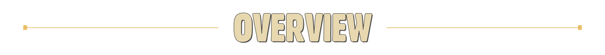
[center][img]https://into-the-rough.github.io/new-vegas-drivables/mod-graphics/shared/ivory-amber/v1/headers/overview.png[/img][/center]
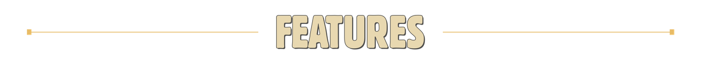
[center][img]https://into-the-rough.github.io/new-vegas-drivables/mod-graphics/shared/ivory-amber/v1/headers/features.png[/img][/center]
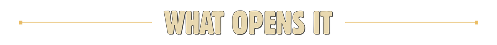
[center][img]https://into-the-rough.github.io/new-vegas-drivables/mod-graphics/shared/ivory-amber/v1/headers/what-opens-it.png[/img][/center]
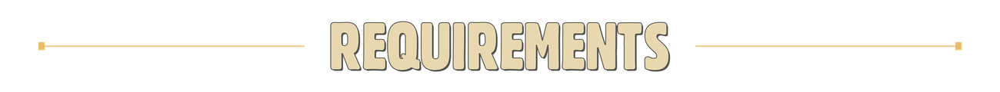
[center][img]https://into-the-rough.github.io/new-vegas-drivables/mod-graphics/shared/ivory-amber/v1/headers/requirements.png[/img][/center]
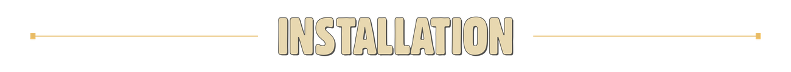
[center][img]https://into-the-rough.github.io/new-vegas-drivables/mod-graphics/shared/ivory-amber/v1/headers/installation.png[/img][/center]
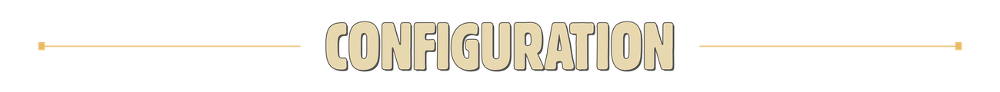
[center][img]https://into-the-rough.github.io/new-vegas-drivables/mod-graphics/shared/ivory-amber/v1/headers/configuration.png[/img][/center]
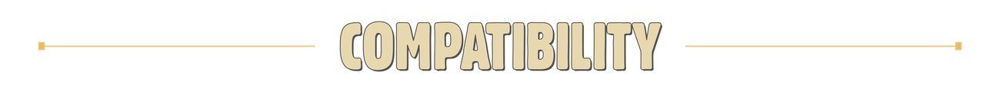
[center][img]https://into-the-rough.github.io/new-vegas-drivables/mod-graphics/shared/ivory-amber/v1/headers/compatibility.png[/img][/center]
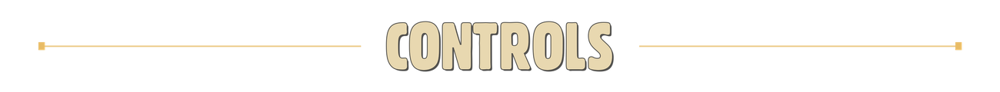
[center][img]https://into-the-rough.github.io/new-vegas-drivables/mod-graphics/shared/ivory-amber/v1/headers/controls.png[/img][/center]
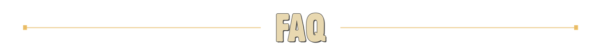
[center][img]https://into-the-rough.github.io/new-vegas-drivables/mod-graphics/shared/ivory-amber/v1/headers/faq.png[/img][/center]
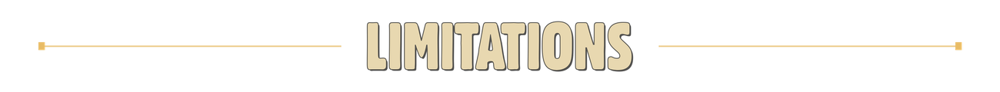
[center][img]https://into-the-rough.github.io/new-vegas-drivables/mod-graphics/shared/ivory-amber/v1/headers/limitations.png[/img][/center]
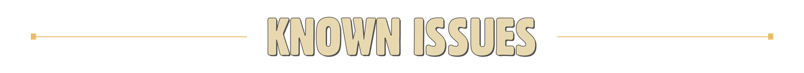
[center][img]https://into-the-rough.github.io/new-vegas-drivables/mod-graphics/shared/ivory-amber/v1/headers/known-issues.png[/img][/center]
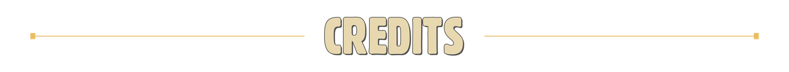
[center][img]https://into-the-rough.github.io/new-vegas-drivables/mod-graphics/shared/ivory-amber/v1/headers/credits.png[/img][/center]
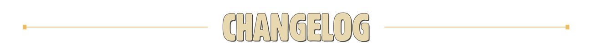
[center][img]https://into-the-rough.github.io/new-vegas-drivables/mod-graphics/shared/ivory-amber/v1/headers/changelog.png[/img][/center]
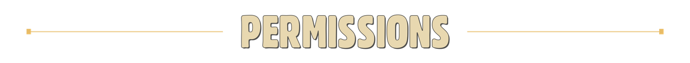
[center][img]https://into-the-rough.github.io/new-vegas-drivables/mod-graphics/shared/ivory-amber/v1/headers/permissions.png[/img][/center]
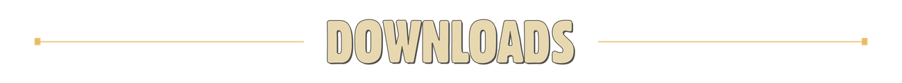
[center][img]https://into-the-rough.github.io/new-vegas-drivables/mod-graphics/shared/ivory-amber/v1/headers/downloads.png[/img][/center]
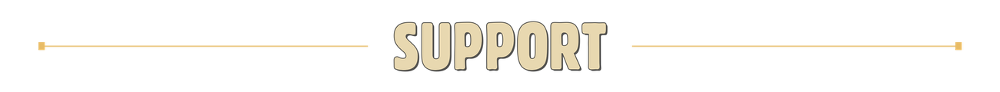
[center][img]https://into-the-rough.github.io/new-vegas-drivables/mod-graphics/shared/ivory-amber/v1/headers/support.png[/img][/center]
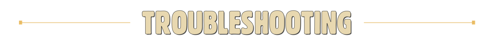
[center][img]https://into-the-rough.github.io/new-vegas-drivables/mod-graphics/shared/ivory-amber/v1/headers/troubleshooting.png[/img][/center]
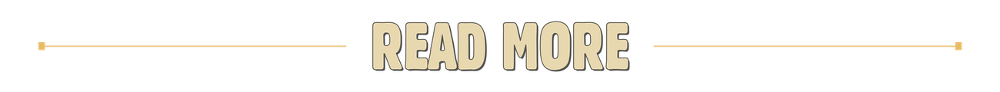
[center][img]https://into-the-rough.github.io/new-vegas-drivables/mod-graphics/shared/ivory-amber/v1/headers/read-more.png[/img][/center]
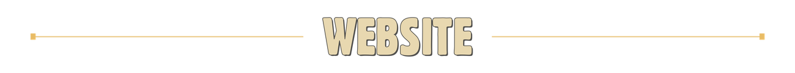
[center][img]https://into-the-rough.github.io/new-vegas-drivables/mod-graphics/shared/ivory-amber/v1/headers/website.png[/img][/center]
[center][img]https://into-the-rough.github.io/new-vegas-drivables/mod-graphics/shared/ivory-amber/v1/subheaders/optional.png[/img][/center]
[center][img]https://into-the-rough.github.io/new-vegas-drivables/mod-graphics/shared/ivory-amber/v1/subheaders/automatic.png[/img][/center]
[center][img]https://into-the-rough.github.io/new-vegas-drivables/mod-graphics/shared/ivory-amber/v1/subheaders/cinematic.png[/img][/center]